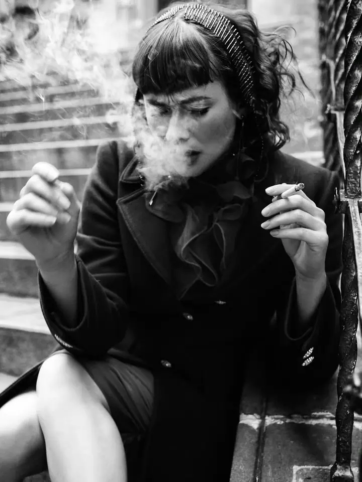

Portrét a fashion v ateliéru
Hodina ve fotografickém studiu a 5 profesionálně retušovaných fotografií. Na přání zajistím vizážistku i stylistku.

Portrétní a módní fotografka
Jmenuji se Lucie Baldé a jsem portrétní a módní fotografka z Prahy. Fotím v ateliéru i v exteriéru a ráda vám pomohu splnit vlastní nápad, třeba s rekvizitami nebo stylingem. Raději vám předám pár kvalitních záběrů, které si vystavíte, než desítky fotek, které skončí v šuplíku.
Zeptat se na termín
Hodina ve fotografickém studiu a 5 profesionálně retušovaných fotografií. Na přání zajistím vizážistku i stylistku.
Hodina focení venku a 8 retušovaných fotografií. Pomohu vybrat lokaci a ráda zrealizuji i váš vlastní nápad.
Hodina v exteriéru, ze které dostanete 15 upravených fotografií. Pokud chcete fotit v ateliéru, dá se pronajmout.
Fotím portréty, módu, beauty i černobílou fotografii, ale také rodiny, děti, páry a firmy. Kromě focení se věnuji i beauty terapii, takže péče o člověka a jeho pohodu je mi blízká i mimo objektiv.
Nepatřím mezi fotografy, kteří předávají padesát fotek jen proto, aby jich bylo hodně. Každou fotografii pečlivě retušuji a posílám ji v plném rozlišení i ve zmenšené verzi pro telefon, e-mail a sociální sítě. Neupravené snímky neposkytuji.
Máte nápad, který byste rádi zkusili? Nestyďte se a napište mi. Mohu zajistit vizážistku, stylistku i lokaci. Mám radost, když jste spokojení, vracíte se na focení a stávají se z nás přátelé.
Prohlédněte si mé portfolio a rozmyslete si, o jaký druh fotografie máte zájem. Společně pak doladíme nápad, rekvizity i styl.
Nabízím předem připravené balíčky podle počtu fotografií, které na vaši žádost mohu upravit.
Fotíme ve studiu v Praze nebo v exteriéru. Když chcete, zajistím vizážistku, stylistku i lokaci.
Vybrané fotografie profesionálně vyretušuji a pošlu vám je elektronicky v plném rozlišení i ve zmenšené verzi pro sociální sítě.
Hodina v ateliéru s 5 retušovanými fotografiemi stojí 6000 Kč, hodina v exteriéru s 8 fotografiemi 4500 Kč. Rodinné, dětské, párové a těhotenské focení venku vyjde na 3500 Kč za 15 fotografií.
Ne, neupravené fotografie za žádných okolností neposkytuji. Ode mě dostanete jen pečlivě vyretušované snímky.
Ano. U portrétního a fashion focení stojí každá další fotografie 600 Kč, u rodinného a párového focení 200 Kč.
Ano, vizážistku i stylistku zajistím za příplatek od 2500 Kč na osobu. U ateliéru je potřeba počítat s pronájmem prodlouženým minimálně o 60 minut.